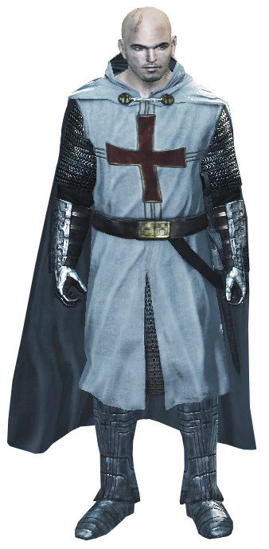
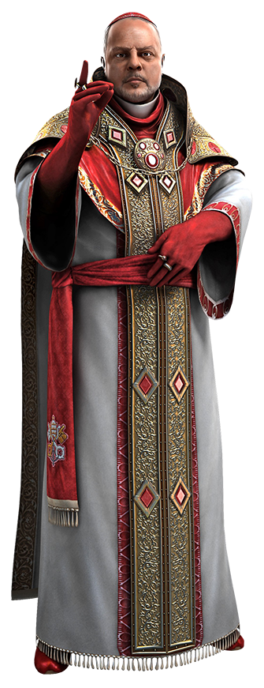
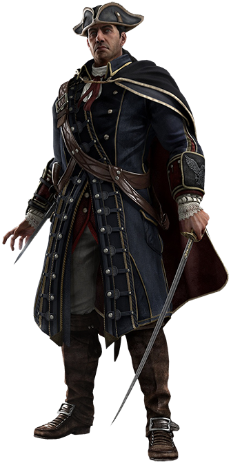

Origen de la Orden
Los orígenes de la Orden Templaria siguen siendo un misterio; se cree que los Templarios han existido desde los albores de la humanidad, o al menos desde que la humanidad reclamó su libertad de la Primera Civilización. Algún tiempo después de la catástrofe de Toba en el 75000 AEC, Caín, el hijo de Adán y Eva, asesinó a su hermano Abel para adquirir un Fragmento del Edén. Por su crimen, Cain fue marcado con una cruz roja. Caín pronto reunió a un colectivo de seguidores llamados los Hijos de Caín que defendieron sus ideales y llamaron a la cruz roja la Marca de Caín
- Edad Antigua: Algunos de los primeros precursores conocidos de los Caballeros Templarios se remontan al Antiguo Reino de Egipto, cuando el faraón Semenejkara fundó la Orden de los Antiguos, una organización que luego se transformaría en la Orden Templaria.
- Edad Media: Alrededor del siglo VI, los precursores de los Caballeros Templarios estuvieron activos en la Inglaterra medieval. En particular, en un momento fueron liderados por el legendario Rey Arturo, cuyos Caballeros de la Mesa Redonda buscaron en particular obtener el Santo Grial. Arturo en algún momento adquirió la posesión de una de las Espadas del Edén, sacándola de una piedra. La Espada se hizo conocida como el arma de excalibur. Finalmente, Arturo fue traicionado por su esposa, su mejor amigo y su hijo, muriendo en la desilusión
- Renacimiento: En 1476, el cardenal Rodrigo Borgia se convirtió en Gran Maestro de los Templarios italianos. Sin embargo, bajo su dirección, los Templarios perdieron de vista su verdadero propósito de paz, en lugar de eso, tomaron el control de Italia por un deseo de poder y codicia; los Templarios llegarían más tarde a referirse a esta época como la "Edad Oscura de la Orden". Con la supervisión de Rodrigo, los Templarios orquestaron varias conspiraciones para desmantelar el poder de las ciudades estado italianas, la primera de las cuales fue el asesinato exitoso del duque Galeazzo Maria Sforza de Milán el 26 de diciembre de 1476, seguida de la ejecución del Asesino Giovanni Auditore da Firenze y sus hijos Federico y Petruccio en Florencia tres días después.
- Era del Imperialismo: En 1692, los Templarios habían descubierto la noticia de que en las colonias americanas algunas muchachas de la ciudad puritana de Salem exhibían un comportamiento extraño. Tras la investigación, los Templarios creyeron que sus aflicciones eran causadas por un Fragmento del Edén. Para controlar a los ciudadanos puritanos de la ciudad, los Templarios William Stoughton y Samuel Parris comenzaron los juicios de brujas de Salem para encontrar pistas que conducieran a la ubicación del artefacto. Los Templarios encarcelaron a las niñas y niños que creían que podrían conducirlos a los Fragmentos del Edén, aunque finalmente se enfrentaron a la oposición de una miembro local de la Hermandad Asesina, Jennifer Querry, y al Asesino británico Thomas Stoddard. Para detener su interferencia, los Templarios reunieron a la gente del pueblo contra los Asesinos, alegando que eran los sirvientes del Diablo.
- Inicio de la Edad Contemporánea: En 1861, estalló una guerra civil en Estados Unidos. La Hermandad estadounidense apoyaba a la Unión de Abraham Lincoln, mientras que los Templarios apoyaron a La Confederación. Con la intención de ganar la guerra, el Mentor en Washington encargó a Varius robar la Daga de Edén del Club Azteca y hacerle entrega de ella al General Ulysses S. Grant, considerado por el Mentor como la mejor esperanza de la Union para ganar la guerra.
- Actualidad: En la década de 1730, el Gran Maestro Reginald Birch de los Templarios británicos, decidió preocuparse por encontrar artefactos de la Primera Civilización en todo el mundo. Al hacerlo, orquestó el asesinato de Edward Kenway para recuperar su diario, del cual se enteró del Gran Templo, ubicado en el Nuevo Mundo. También tomó bajo su ala a Haytham, hijo de Kenway, para enseñarle los objetivos de los Templarios.
Miembros notables
Maestros Templarios
Robert de Sablé
1150 – 1191
Rodrigo Borgia
1431 – 1503
Haytham Kenway
1725 – 1781
Armas Caracteristicas
- Hoja Oculta
- Cañon Oculto
- Arrojadizos
- Armas Pesadas
- Ballesta